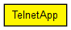

Models Telnet sessions with a specific user behaviour. The server app should be TCPGenericSrvApp. Compatible with both IPv4 and IPv6.
NOTE: This module emulates a very specific user behaviour, and as such, it should be viewed as an example rather than a generic Telnet model. If you want to model realistic Telnet traffic, you are encouraged to gather statistics from packet traces on a real network, and write your model accordingly.
The following diagram shows usage relationships between types. Unresolved types are missing from the diagram. Click here to see the full picture.
The following diagram shows inheritance relationships for this type. Unresolved types are missing from the diagram. Click here to see the full picture.
| Name | Type | Default value | Description |
|---|---|---|---|
| address | string | "" |
may be left empty ("") |
| port | int |
port number to listen on FIXME change it to listenPort = default(1000) |
|
| connectAddress | string |
server address (may be symbolic) |
|
| connectPort | int | 1000 |
port number to connect to |
| startTime | double | 1s |
time first session begins |
| numCommands | int | exponential(10) |
user types this many commands in a session |
| commandLength | int | 10B |
commands are this many characters (plus Enter) |
| keyPressDelay | double | exponential(0.1s) |
delay between keypresses |
| commandOutputLength | int | exponential(1000B) |
commands produce this much output |
| thinkTime | double | exponential(10s) |
user waits this much before starting to type new command |
| idleInterval | double | exponential(300s) |
time gap between sessions |
| reconnectInterval | double | 30s |
if connection breaks, user waits this much before trying to reconnect |
| Name | Value | Description |
|---|---|---|
| display | i=block/telnet |
| Name | Direction | Size | Description |
|---|---|---|---|
| tcpIn | input | ||
| tcpOut | output |
// // Models Telnet sessions with a specific user behaviour. // The server app should be TCPGenericSrvApp. // Compatible with both IPv4 and IPv6. // // NOTE: This module emulates a very specific user behaviour, and as such, // it should be viewed as an example rather than a generic Telnet model. // If you want to model realistic Telnet traffic, you are encouraged // to gather statistics from packet traces on a real network, and // write your model accordingly. // simple TelnetApp like TCPApp { parameters: string address = default(""); // may be left empty ("") int port; // port number to listen on FIXME change it to listenPort = default(1000) string connectAddress; // server address (may be symbolic) int connectPort = default(1000); // port number to connect to double startTime @unit("s") = default(1s); // time first session begins volatile int numCommands = default(exponential(10)); // user types this many commands in a session volatile int commandLength @unit("B") = default(10B); // commands are this many characters (plus Enter) volatile double keyPressDelay @unit("s") = default(exponential(0.1s)); // delay between keypresses volatile int commandOutputLength @unit("B") = default(exponential(1000B)); // commands produce this much output volatile double thinkTime @unit("s") = default(exponential(10s)); // user waits this much before starting to type new command volatile double idleInterval @unit("s") = default(exponential(300s)); // time gap between sessions volatile double reconnectInterval @unit("s") = default(30s); // if connection breaks, user waits this much before trying to reconnect @display("i=block/telnet"); gates: input tcpIn @labels(TCPCommand/up); output tcpOut @labels(TCPCommand/down); }